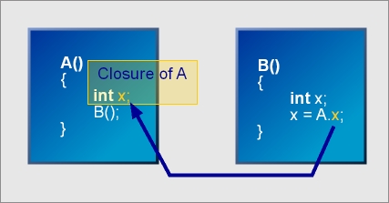

| 闭包 |
 |
 |
 |
在上一章中, 使用 phoenix 时我们已看到如何通过 var 从解析器中获取数据:
int i;
integer = int_p[var(i) = arg1];妙极! 我们的规则 integer 若解析成功, 会把解析出的整数传递给变量 i. 每当需要解析一个整数时, 我们可以调用规则 integer, 然后简单地从变量 i 中提取解析出的数字. 不过有一点需要注意. 从文法的角度看, 变量 i 是全局的. 当文法变得更复杂时, 很难跟踪 i 的当前状态. 而且, 对于递归规则, 全局变量根本无法胜任.
如果你需要规则(或文法)可重入, 就需要闭包. 例如, 一条规则(或文法)可能直接或间接地被自身递归调用. 计算器就是一个很好的例子: expression 规则在调用 factor 规则时间接地递归调用自身.
闭包为每次解析规则调用提供命名的(惰性)变量. 闭包变量使用成员语法寻址:
rulename.varname闭包变量 R.x 可以在由 R 调用的任何其他规则的语义动作中寻址; 它指向最内层被包围的 R 调用. 若不存在这样的调用, 则在运行期触发断言.
闭包为局部变量提供了一个环境, 即一个栈帧. 最重要的是, 闭包变量可以从 EBNF 文法规范中访问, 并可用于在自顶向下的递归下降中, 将解析器信息从最顶层规则向上游或向下游传递到终结符. 闭包在 C++ 中实现了动态作用域. Spirit 的闭包实现基于 Todd Veldhuizen 的 Dynamic scoping in C++ 技术, 该技术出自其论文 Techniques for Scientic C++.
当规则被赋予闭包时, 闭包的局部变量在进入 parse 函数之前创建, 在退出 parse 函数之后销毁. 这些局部变量是存在于硬件栈上的真正的局部变量.
Spirit v1.8 的闭包支持需要 Phoenix. 未来 Spirit 将完全支持 BLL. 目前正在合并这两个库的特性. |
让我们回到 Functional 一章中介绍的计算器文法. 这里再次给出完整文法, 外加闭包声明:
struct calc_closure : boost::spirit::closure<calc_closure, double> { member1 val; }; struct calculator : public grammar<calculator, calc_closure::context_t> { template <typename ScannerT> struct definition { definition(calculator const& self) { top = expression[self.val = arg1]; expression = term[expression.val = arg1] >> *( ('+' >> term[expression.val += arg1]) | ('-' >> term[expression.val -= arg1]) ) ; term = factor[term.val = arg1] >> *( ('*' >> factor[term.val *= arg1]) | ('/' >> factor[term.val /= arg1]) ) ; factor = ureal_p[factor.val = arg1] | '(' >> expression[factor.val = arg1] >> ')' | ('-' >> factor[factor.val = -arg1]) | ('+' >> factor[factor.val = arg1]) ; } typedef rule<ScannerT, calc_closure::context_t> rule_t; rule_t expression, term, factor; rule<ScannerT> top; rule<ScannerT> const& start() const { return top; } }; };
 完整源代码可 在此查看. 它是 Spirit 发行包的一部分.
完整源代码可 在此查看. 它是 Spirit 发行包的一部分.
显然, 与这个计算器的最初版本相比, 我们已经走了很远. 借助内联 lambda 表达式, 我们得以编写自带语义动作的完整自包含文法.
首先要注意的是 calc_closure 的声明.
声明闭包
闭包声明的一般语法为:
struct name : spirit::closure<name, type1, type2, type3,... typeN>
{
member1 m_name1;
member2 m_name2;
member3 m_name3;
...
memberN m_nameN;
}; member1... memberN 是指向实际闭包变量的间接链接. 它们的间接类型对应于 type1... typeN. 在我们的示例中, 声明了 calc_closure:
struct calc_closure : boost::spirit::closure<calc_closure, double> { member1 val; };
calc_closure 有一个单一变量 val, 其类型为 double.
|
挂接闭包
闭包可应用于规则(rule), 子规则(subrule)和文法(grammar)(非终结符). 闭包有一个特殊的 解析器上下文, 可与这些非终结符配合使用. 闭包的上下文就是它挂接进非终结符的手段. 闭包 C 的上下文是 C::context_t.
在示例中可以看到, 我们把 calc_closure 挂接到了文法中的 expression, term 和 factor 规则上:
typedef rule<ScannerT, calc_closure::context_t> rule_t; rule_t expression, term, factor;
以及文法本身:
struct calculator : public grammar<calculator, calc_closure::context_t>
闭包返回值
闭包的 member1 即闭包的返回值. 这个返回值与 anychar_p 等返回的值一样, 可用于沿解析器层次向上传递数据, 或传递给语义动作. 因此, expression, term 和 factor 以及 calculator 文法本身, 都返回一个 double.
访问闭包变量
闭包变量可以在语义动作内部访问, 就像访问结构体成员一样: 用其所属规则, 子规则或文法限定成员名. 在上面的示例中, 注意我们是如何引用闭包成员 val 的. 示例:
expression.val // refer to expression's closure member val初始化闭包变量
示例中我们没有用到这个特性, 但为了完整性...
有时我们需要在进入非终结符(规则, 子规则或文法)时初始化闭包变量. 启用闭包的非终结符默认会在进入 parse 成员函数时对变量进行默认构造. 若不希望如此, 可以向非终结符传递构造函数实参, 其语法模拟函数调用.
举一个(人为编造的)例子: 若希望在调用 expression 规则时把 calc_closure 的变量构造为 3.6, 我们这样写:
expression(3.6) // invoke rule expression and set its closure variable to 3.6构造函数实参实际上是 Phoenix lambda 表达式, 因此可以使用任意复杂的表达式. 这是另一个 人为编造的例子:
// call rule factor and set its closure variable to (expression.x / 8) * factor.y
factor((expression.x / 8) * term.y) 传入的实参可以少于闭包中实际变量数, 右侧没有对应构造实参的变量将被默认构造. 传入多于闭包变量数的实参则是错误的.
传入的实参可以少于闭包中实际变量数, 右侧没有对应构造实参的变量将被默认构造. 传入多于闭包变量数的实参则是错误的.
 可编译的示例见 parameters.cpp. 它是 Spirit 发行包的一部分.
可编译的示例见 parameters.cpp. 它是 Spirit 发行包的一部分.
让我们为一种类似 XML/HTML, 具有任意嵌套标签的语言编写一个非常简单的解析器. 此类嵌套标签解析的典型做法是把实际的标签匹配委派给语义动作, 或许还要借助符号表. 例如, 语义动作负责确保标签正确嵌套(如 <p><table></p></table> 这样的代码是错误的).
Spirit 允许我们在运行期动态修改解析器. 通过语义动作引导解析器行为的能力, 使我们有可能直接在解析器中确保标签的嵌套. 下面将说明这是如何做到的. 这是最简形式的文法:
element = start_tag >> *element >> end_tag;
一个元素(element)是一个 start_tag(如 <font>), 后跟零个或多个元素, 并以一个 end_tag(如 </font>)结束. 下面是对我们的 start_tag 的第一次尝试:
start_tag = '<' >> lexeme_d[(+alpha_p)] >> '>';
注意, end_tag 与 start_tag 完全相同, 只是多了一个斜杠:
end_tag = "</" >> what_we_got_in_the_start_tag >> '>';
我们需要做的是暂时存储 start_tag 中得到的内容, 之后再用来解析 end_tag. 巧的是, 我们可以使用 参数化解析器原语来解析 end_tag:
end_tag = "</" >> f_str_p(tag) >> '>';
其中 f_str_p 以我们存储的内容(tag)为参数.
不过要提醒的是, 我们的文法是递归的. element 规则会调用自身. 因此, 不能只用一个变量并配合 phoenix::var 或 boost::ref. 嵌套递归会轻易吞掉该变量. element 的每次调用都必须拥有自己的闭包变量 tag. 现在给出完整的文法:
struct tags_closure : boost::spirit::closure<tags_closure, string> { member1 tag; }; struct tags : public grammar<tags> { template <typename ScannerT> struct definition { definition(tags const& /*self*/) { element = start_tag >> *element >> end_tag; start_tag = '<' >> lexeme_d [ (+alpha_p) [ // construct string from arg1 and arg2 lazily // and assign to element.tag element.tag = construct_<string>(arg1, arg2) ] ] >> '>'; end_tag = "</" >> f_str_p(element.tag) >> '>'; } rule<ScannerT, tags_closure::context_t> element; rule<ScannerT> start_tag, end_tag; rule<ScannerT, tags_closure::context_t> const& start() const { return element; } }; };
我们在 start_tag 的 (+alpha_p) 部分挂接了一个语义动作. 在那里, 我们把解析出的标签存储到 element 的闭包变量 tag 中. 之后, 在 end_tag 中, 我们直接用 element 的闭包变量 tag 来参数化 f_str_p 解析器. 简洁而优雅. 如果某些细节开始变得难以理解(例如 construct_ 是什么?), 请查阅 Phoenix 一章.
 完整源代码可 在此查看. 它是 Spirit 发行包的一部分.
完整源代码可 在此查看. 它是 Spirit 发行包的一部分.
什么是闭包?
闭包是一个对象, 它 "关闭" 某函数的局部变量, 使这些变量在函数之外可见且可访问. 更有意思的是, 闭包实际上打包了一个局部上下文(某些变量所在的栈帧), 并使其在变量实际存在的作用域之外可用. 这些信息本质上被闭包 "捕获", 从而可以在任何地方、任何时间被引用, 甚至在变量实际创建之前.
下图描绘了这样一种情形: 函数 A(或规则)暴露其闭包, 而另一个函数 B 通过该闭包引用 A 的变量.
 |
| 闭包作为一个对象, "关闭" 某函数的局部变量, 使这些变量在函数之外可见且可访问 |
当然, 当 A.x 被引用时, 函数 A 应处于活动状态. 这意味着函数 B 依赖于函数 A(若 B 是 A 的嵌套函数, 则总是如此). Spirit 规则的自由形式特性允许随时随地方问闭包变量. 访问 A.x 等价于引用函数 A 最顶层的栈变量 x. 若引用 A.x 时函数 A 不处于活动状态, 则会抛出运行期异常.
嵌套函数
要充分理解闭包的重要性, 最好看看像 Pascal 这样允许嵌套函数的语言. 既然我们面对的是 C++, 就暂且假设 C++ 允许嵌套函数. 考虑以下 伪 C++ 代码:
void a() { int va; void b() { int vb; void c() { int vc; } c(); } b(); }
我们有三个函数 a, b 和 c, 其中 c 嵌套于 b, b 嵌套于 a. 我们还有三个变量 va, vb 和 vc. 每个局部变量的生存期始于进入声明它的函数, 止于该函数退出. 局部变量的作用域覆盖声明它的外围函数内部的所有嵌套函数.
沿下游从函数 a 到函数 c: 当函数 a 被进入时, 变量 va 将在栈上创建. 当函数 b 被进入(由 a 调用)时, va 完全处于作用域内, 在 b 中可见. 此时一个新变量 vb 在栈上创建. 当函数 c 被进入时, va 与 vb 都清晰地在作用域内, 同时一个新的局部变量 vc 被创建.
沿上游看, vc 在函数 c 之外不可见, 也不可能可见. c 一旦退出, vc 的生存期即告结束. vb 亦然: vb 在函数 c 中可访问, 但在函数 a 中不可访问.
嵌套的相互递归规则现在设想 a, b 和 c 是规则:
a = b >> *(('+' >> b) | ('-' >> b)); b = c >> *(('*' >> c) | ('/' >> c)); c = int_p | '(' >> a >> ')' | ('-' >> c) | ('+' >> c);
我们可以把 a, b 和 c 想象为相互递归的函数: a 调用 b, b 调用 c, 而 c 又递归调用 a. 现在, 设想 a, b 和 c 各有一个名为 value 的局部变量, 可以在文法中通过显式限定来引用:
a.value // refer to a's value local variable b.value // refer to b's value local variable c.value // refer to c's value local variable
与上面一样, 当 a 被进入时, 一个局部变量 value 在栈上创建. 该变量可被 b 和 c 引用. 同样, 当 b 被进入(由 a 调用)时, b 会创建一个局部变量 value. 该变量可被 c 访问, 但不能被 a 访问.
与嵌套函数的类比到此为止: 当 c 被调用时, 会创建一个新变量 value, 它照常会延续 c 的整个生存期. 但要特别注意的是, c 可能递归调用 a. 此时, a 便可以引用的局部变量属于 c.
|
|
|
Copyright © 1998-2003 Joel de Guzman
使用、修改与分发受 Boost 软件许可 1.0 版(Boost Software License, Version 1.0)约束. (随附文件 LICENSE_1_0.txt 或复制于 http://www.boost.org/LICENSE_1_0.txt)